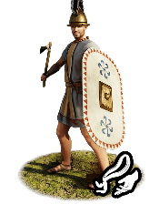
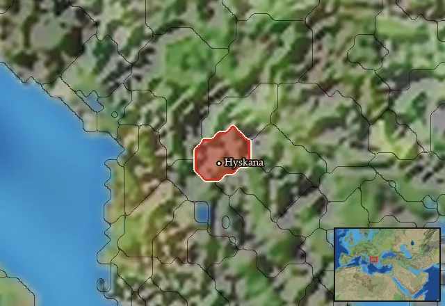

RTR: Imperium Surrectum
RTR: Imperium SurrectumPenestae Axemen


Class: light · Category: infantry · Men per unit: 40
Description
“Sally forth and break them, let your axes sing!” The Penestae Axemen are sturdy medium infantry. Capable of fast flanking manoeuvres and charges thanks to their light tunics, they can also stand their ground benefitting from their thureos shields and Illyrian helmets. These men can fiercely charge their enemies and inflict hideous wounds upon them with their axes.
Historical background
The Penestae were an Illyrian tribe living in the border marches of Illyria and Macedon, located above Lake Lychidnos, or Ohrid. This was a vital strategic area, as it allowed entry from Illyria into the centre of Macedon – a dangerous place to live in! In the fairly recent past, 358 BC, King Philip II (Alexander’s father) subjugated part of the area, killing some 7,000 Illyrians in the process (Hammond, The Kingdoms in Illyria circa 400 - 167 BC (1966), p. 244). The lake Ohrid itself was rich in fish, which were often salted to allow for their storage or trade, and the nearby lands were fertile enough to enable local elites to bury themselves with great wealth (Hammond (1966), p. 249). It was vital both economically and strategically, but perhaps linguistically, too. The Penestae have been cautiously labelled by Claus Haebler as the centre point of what is considered the real Illyrian language, sharing this tongue with the Dassaretti, Taulanti, and Parthini tribes (Haebler, Palaeo-Balkanic languages (2002), p. 475).
Otherwise, not much else is mentioned about the Penestae until Livy’s account. Around 170 BC during the Third Macedonian War, when the Macedonians under Perseus took the Penestae settlement of Uscana (Hyskana) and enslaved its populace, perhaps for ransom, as the “Uscanians and Illyrians were sold as slaves to the Penestae” (Liv. 43.18). This sale would bring unintended consequences to the Penestae, as they were loyal to Rome at this time. Unfortunately for them, as Livy describes it, the Macedonians decided they quite liked the wealth of “Oaeneum, which was in many ways strategically situated, particularly in that the route to the Labeatae”. Despite the Penestae owning the even more strategically cited and “populous fort, Draudacum” nearby, and a series of 11 other forts, they “all at once surrendered” to Perseus’ army, which gave him further encouragement to lay siege to Oaeneum. The siege seemed a daunting proposition, as Oaeneum was “strong both because of a somewhat larger force of young men than the others (forts) had had and because of its walls”. However, Perseus’ Macedonians created elaborate siegeworks, even though they were subjected to frequent sallies from the Penestaean defenders, eventually surrounding the city with embankments and a mound to storm the walls. In the end, the town fell: “adult males were killed; their wives and children Perseus put under guard; the other items of booty fell to the soldiers” (Liv. 43.19).
The Penestaean military has some limited historical basis. Livy (44.11) mentions that 800 Agrianians and 2,000 Penestae “sent from their home by Pleuratus – both peoples being good fighters” were stationed in Kassandreia in 169 BC to defend it against Rome. They did so quite successfully, too, as a “strong force of Agrianes and Illyrians” sallied out and the Romans were “routed in their scattered and unorganized state and chased to the moat, into which they were driven and which they filled with the fallen” (Liv. 44.12). As mentioned earlier, this is at odds with their alliance with Rome at the time, so it is quite likely that these Penestae were serving as mercenaries, hence their inclusion as an Area of Recruitment unit in RIS.
The equipment used by the Penestae Axemen represents archaeological findings from nearby areas as an approximation of what they might have carried into combat. The buried remains found in Rechista include one Illyrian helmet, two iron spearheads, an iron axe, along with a silver double pin and a silver rhomboid sheet, possibly used as a mouth cover. The Illyrian helmet was noted to be rather unique by Nikola Stefanovski as it seems to have been repaired several times, which is very unusual for burial goods. The axe too drew particular attention due to its relative rarity in Illyrian finds (Stefanovski, Representation of Warriorhood (2023), p. 101). The unit also wields the thureos shield to represent the discovery of a Celtic mercenary shield found in a warrior’s grave at Ohrid-Gorna Port just south of where the Penestae lived (Ardjanliev, Celtic warriors from Ohrid (2014), pp. 34 and 49). Therefore, we gave them a selection of different items they likely would have used and that would not have been too notable compared to other Illyrians.
Stats
| Rank in roster | Rank in roster | Rank in roster | Rank in roster | ||||||||
|---|---|---|---|---|---|---|---|---|---|---|---|
| Men per unit | 40 | ███······· 31% | Attack | 9 | █········· 14% | Charge bonus | 24 | ████████·· 81% | Defence | 33 | █████····· 54% |
| · armour | 3 | ██········ 22% | · defence skill | 25 | ███████··· 74% | · shield | 5 | ██████···· 58% | Morale | 11 | ████······ 40% |
| Discipline | Normal | Training | Untrained | Recruitment cost | 1,658 dn | ███······· 29% | Upkeep per turn | 607 dn | ████······ 44% | ||
| Turns to recruit | 2 |
Weapons
| Primary | Secondary | Primary | Secondary | Primary | Secondary | Primary | Secondary | ||||
|---|---|---|---|---|---|---|---|---|---|---|---|
| Attack | 9 | — | Charge bonus | 24 | — | Type | melee · blade | — | Damage | slashing | — |
| Properties | Armour-piercing (counts only half the target's armour) | — |
Defence
| Primary | Secondary | Primary | Secondary | Primary | Secondary | Primary | Secondary | ||||
|---|---|---|---|---|---|---|---|---|---|---|---|
| Total | 33 | — | Armour | 3 | — | Defence skill | 25 | — | Shield | 5 | — |
Condition and terrain
| Hit points | 1 | Ground: scrub / sand / forest / snow | 0 / 0 / 0 / 0 | Charge distance | 30 | Formations | Square |
Technical stats
| Time between blows (primary / secondary) | 2.5 s / — | Extra fatigue in hot climates | 0 | Collision mass per man (1.0 is normal) | 0.93 | Spacing between men: close / loose | 1 × 1.2 m / 2 × 2.4 m |
| Default ranks | 5 |
In battle: Can hide in long grass · Can sap · Very good stamina
Who can recruit it
No faction has this on its core roster: it can be raised only in the provinces below.
Any faction holding one of the provinces below can field it.
Exactly what a settlement must have, route by route (1)
| Building | Also requires | ||||||
|---|---|---|---|---|---|---|---|
| Any settlement | Garrison Building or Tier 1 Military Industrial Complex · Penestan area of recruitment · Any Government (Dependency, Indirect Rule or Direct Rule) · Tier 2 Colony not built |
Areas of recruitment

| Zone | Provinces | ||||||
|---|---|---|---|---|---|---|---|
| Penestan | 1 |